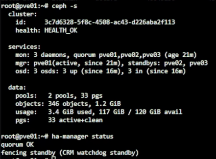
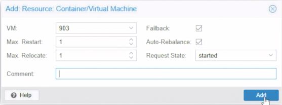
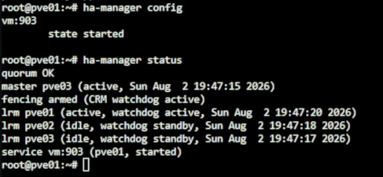
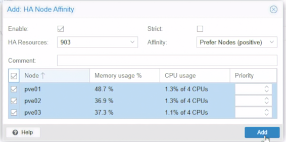

Day 08｜節點故障後 VM 如何接手：Proxmox VE 遷移、HA 隔離與恢復時間量測
對應文章：Day 08｜節點故障後 VM 如何接手：Proxmox VE 遷移、HA 隔離與恢復時間量測
今日將聚焦 Proxmox VE 的高可用。基於 Day 07 已建立的 ceph-vm RBD Storage，我們可以使用可丟棄測試 VM 實地展示 Migration 與 PVE HA Recovery。
1. 盤點 PVE HA 前置條件
- 登入 Cluster 的
Datacenter→Storage。 - 檢查
ceph-vm的 Nodes、Shared 與 Content，並以ceph -s確認健康。 - 點選測試 VM 的
Hardware，確認所有磁碟是否都位於ceph-vm。 - 至
Datacenter→HA，觀察 Affinity Rules、Resources、Status（PVE 9 已使用 HA Affinity Rules 取代 HA Groups）。 - Shell 驗證：
pvecm status
pvesm status
ceph -s
ha-manager status

圖（一）盤點 PVE HA 前置條件。
如測試 VM 磁碟仍只存在單一節點的 local-lvm，節點失效時其他節點找不到該磁碟。只有已移至 ceph-vm 的測試 VM 可進行 HA 實作。
2. 使用可丟棄 VM 建立 HA Resource
使用 Day 06 的 cloudinit-test01，或重新建立一個 VMID 903 測試 VM：
- 點選測試 VM。
- 至 VM 的
Hardware，選擇系統磁碟，點擊Disk Action→Move Storage。 - Target Storage 選
ceph-vm，勾選刪除來源磁碟，按Move disk。 - 等待 Task 顯示
OK，並確認 Hardware 中該磁碟位於ceph-vm。 - 啟動 VM，確認 Guest 開機後台無誤。
- 至
Datacenter→HA→Resources→Add。 - Resource 選測試 VM。
Max Restart、Max Relocate與 Comment 可使用預設值，按Add。

圖（二）新增 HA Resource。
- 加入後查看
HA→Status，並驗證：
ha-manager config
ha-manager status

圖（三）確認 HA Manager 狀態。
若 ha-manager config 中未顯示 state started，可使用：
ha-manager set vm:903 --state started
3. 建立 HA Node Affinity Rule
PVE 9 將以往的 HA Group 節點偏好更改為 Node Affinity Rule。Rule 必須綁定已存在的 HA Resource，因此在完成上節後，才建立 Rule。
- 至
Datacenter→HA→Affinity Rules。 - 在
HA Node Affinity Rules按Add。 Resources填入測試 VM，例如vm:903。Nodes勾選pve01、pve02、pve03。Strict不勾選。非 Strict Rule 表示優先使用列出節點，但這些節點都不可用時，仍可退至其他可用節點。Comment填Day08 lab node affinity，按Add建立。

圖（四）建立 HA Node Affinity Rule。
4. 確認 CPU Type 是否允許 Migration
至測試 VM 的 Hardware → Processors 查看 CPU Type，或以指令：
qm config 903 | grep '^cpu:'
- 若來源與目標是高度相容的 CPU，
host通常仍能 Live Migration。 - 若目標節點缺少 VM 已使用的 CPU Flag，Live Migration 可能被拒絕或失敗。
- Offline Migration 與 HA Recovery 不需要搬移正在執行的 CPU State，問題較少。
在 Lab 的 pve01～pve03 在同一層 L0 上，看到的是同一顆實體 CPU，因此可保證 host 的 Live Migration 實測可行。若是不同世代 CPU 混用的正式環境，建議選擇最低節點硬體共同支援的 CPU Model（例如 x86-64-v2-AES）。若需修改，至 VM → Hardware → Processors → Edit → Type。
5. 觀察 Migration 與 HA Recovery 的差異
- Migration：由管理者主動選擇目標節點並等待轉移完成，適用維護與排程。
- HA Recovery：節點被動失效不可用時，由 HA Manager、Quorum、Watchdog/Fencing、Affinity Rules 與資源狀態決定是否在其他節點重啟 VM。
示範：
- 右鍵測試 VM 選
Migrate。 - 選擇 Target Node。
- 確認磁碟位於
ceph-vm後執行 Live Migration，觀察過程與 Guest 網路是否中斷。 - 至
HA Status確認 Resource 的節點已更新。 - 關閉測試 VM，執行一次 Offline Migration，觀察兩種操作的介面與差異。
- 要做 Recovery 實測，可至 L0 直接關閉測試 VM 所在的 Nested PVE 節點，觀察 HA 是否在另一節點啟動 VM。
- 關閉節點會同時讓其 OSD 與 MON 離線，請記得以
ceph -s確認。
6. 導入前補充
規劃 PVE HA 前，要充分評估：三台以上實體主機、獨立且備援的 Corosync 網路、Watchdog/Fencing 機制、共享或分散式儲存、相容的 Cluster CPU Model、UPS、備份等實體驗證與演練。